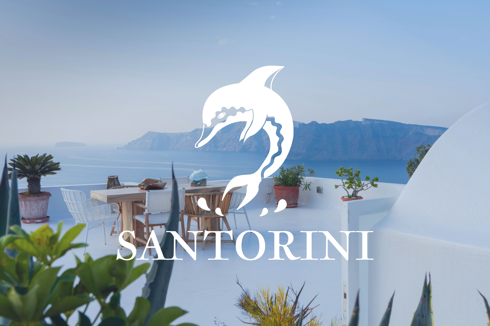

- services:
- Print Design
- Typesetting
- software:
- Illustrator
- InDesign
- Photoshop
- Premiere Pro
Santorini Logo
Having always wanted to visit Santorini, renowned for its white-washed charm, blue-domed buildings, and unforgettable sunsets, I decided to create a tourism logo for Santorini.
Ideation
Sketching
The initial phase of the Santorini tourism logo design involved listing information related to this country through research. Considering the imagery of Santorini, I sketched various ideas and then illustrated the top three candidates to visualize them.
Design
Illustrator
I selected three sketches and worked on them in Illustrator. Among them, I chose the one that most impressively encapsulates the history of Santorini, conveying its significance.
Finalizing
Final Result
For the final logo, I incorporated a representation of the ancient Greek fresco depicting dolphins. In addition, I created two other logos—one showcasing the window scenery of Santorini, and the other combining the architectural design of Santorini with the sea.
- 